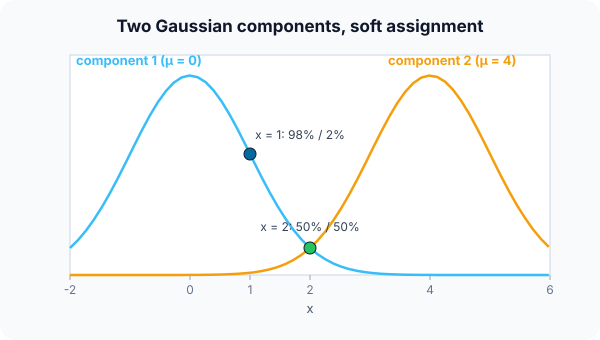

Prerequisites
- k-means.
- The normal (Gaussian) distribution: mean $\mu$, standard deviation $\sigma$.
- Bayes' rule (see Naive Bayes).
The analogy
Everyday analogy
Imagine two radio stations broadcasting from two towns. Between the towns you hear a mix of both; near one town that station dominates.
In a GMM, each cluster is a "station" with a bell-shaped signal. A point's responsibilities say how much of what it "hears" comes from each station.
How it works
Model: the density is a weighted sum of $K$ Gaussians: weights $\pi_k$ (summing to 1), means $\mu_k$, and variances $\sigma_k^2$ (covariance matrices in more dimensions).
Start with the E-step by hand
Components: $\pi_1 = \pi_2 = 0.5$, $\mu_1 = 0$, $\mu_2 = 4$, $\sigma = 1$. Gaussian density $\mathcal{N}(x \mid \mu, 1) = e^{-(x - \mu)^2/2} / \sqrt{2\pi}$. Predict, then open "Check".
Example: predict before you read
Step 1. For $x = 1$, compute the two densities.
Check
$\mathcal{N}(1 \mid 0, 1) \approx 0.242$ and $\mathcal{N}(1 \mid 4, 1) = e^{-4.5}/\sqrt{2\pi} \approx 0.0044$.
Step 2. Cover the next line and guess: the responsibility of component 1 for $x = 1$.
Check
$r_1 = 0.5 \cdot 0.242 / (0.5 \cdot 0.242 + 0.5 \cdot 0.0044) \approx 0.982$.
Step 3. Do the same for $x = 2$.
Check
Both densities equal $e^{-2}/\sqrt{2\pi} \approx 0.054$, so $r_1 = r_2 = 0.5$: the point is shared equally.

Quick recall: Before reading further, cover the text above and say out loud: what does a responsibility $r_{ik}$ mean?
Check your answer
The probability that point $i$ was generated by component $k$, given the current parameters.
Finish the picture: the M-step
Suppose three points 0, 2, 4 have responsibilities for component 1 of 1.0, 0.5 and 0.0.
- New weight $\pi_1$. Predict it.
Check
Average responsibility: $(1 + 0.5 + 0)/3 = 0.5$.
- New mean $\mu_1$. Predict it.
Check
$(1 \cdot 0 + 0.5 \cdot 2 + 0 \cdot 4)/(1 + 0.5 + 0) = 1/1.5 \approx 0.67$: the shared point pulls the mean towards it.
Quick recall: Without scrolling up, say out loud: in the M-step, how is a component's new mean computed?
Check your answer
As a weighted average of all the points, each weighted by its responsibility for that component.
Full worked calculation
One full EM iteration for two 1-D Gaussians on the data 0, 1, 2, 4, 5. Start: $\pi_1 = \pi_2 = 0.5$, $\mu_1 = 0$, $\mu_2 = 4$, $\sigma_1 = \sigma_2 = 1$. The E-step computes soft assignments, the M-step refits the Gaussians.
| $x$ | density under 1 (∝) | density under 2 (∝) | $r_1 = P(\text{comp. 1}\mid x)$ | $r_2 = 1 - r_1$ |
|---|---|---|---|---|
| 0 | $e^{0} = 1$ | $e^{-8}$ | 0.9997 | 0.0003 |
| 1 | $e^{-0.5}$ | $e^{-4.5}$ | 0.982 | 0.018 |
| 2 | $e^{-2}$ | $e^{-2}$ | 0.5 | 0.5 |
| 4 | $e^{-8}$ | $e^{0} = 1$ | 0.0003 | 0.9997 |
| 5 | $e^{-12.5}$ | $e^{-0.5}$ | 0.0000 | 1.0000 |
-
1E-step: likelihood under each component
$$\mathcal N(x; \mu, 1) \propto e^{-(x - \mu)^2/2}: \quad x = 1: \; e^{-1/2} \text{ vs } e^{-9/2}$$Both Gaussians have the same $\sigma$ and the same $\pi$, so the constant factors cancel and only the exponent matters. A point 1 away from $\mu_1$ and 3 away from $\mu_2$ is far more likely under component 1.
-
2E-step: responsibilities
$$r_1(1) = \frac{e^{-0.5}}{e^{-0.5} + e^{-4.5}} = \frac{1}{1 + e^{-4}} \approx 0.982, \qquad r_1(2) = \frac{e^{-2}}{e^{-2} + e^{-2}} = 0.5$$Each point is split between the components in proportion to how well each explains it. The point 2 sits exactly halfway between 0 and 4, so it is shared 50/50. Unlike k-means, nothing is forced into one cluster.
-
3M-step: effective sizes and weights
$$N_1 = \sum r_1 = 0.9997 + 0.982 + 0.5 + 0.0003 + 0 = 2.482, \quad N_2 = 5 - 2.482 = 2.518, \quad \pi_1 = \frac{2.482}{5} = 0.496$$$N_1$ is "how many points component 1 owns", counting fractions. The mixing weight is that share of the data.
-
4M-step: new means
$$\mu_1 = \frac{\sum r_1 x}{N_1} = \frac{0 + 0.982 + 1 + 0.001 + 0}{2.482} = 0.799, \qquad \mu_2 = \frac{10.017}{2.518} = 3.978$$Each mean is a weighted average of all points, with the responsibilities as weights. $\mu_1$ moves from 0 towards 1 and 2 because it owns most of point 1 and half of point 2.
-
5M-step: new variances
$$\sigma_1^2 = \frac{\sum r_1 (x - \mu_1)^2}{N_1} = \frac{0.638 + 0.040 + 0.721 + 0.003}{2.482} = 0.565, \qquad \sigma_2^2 = 1.257$$Same idea for the spread: weighted squared distances to the new mean. Component 1 tightens (its points are close together), component 2 widens slightly.
-
6Check: the log-likelihood went up
$$\log L = \sum_i \ln\big(\pi_1 \mathcal N(x_i; \mu_1, \sigma_1^2) + \pi_2 \mathcal N(x_i; \mu_2, \sigma_2^2)\big): \quad -10.35 \;\to\; -9.30$$EM guarantees that every iteration increases (or keeps) the likelihood of the data. We repeat E and M until it stops changing by more than a small tolerance.
What the numbers tell us
One EM round moved the components to $\mu = (0.80, 3.98)$, $\sigma^2 = (0.57, 1.26)$, $\pi = (0.50, 0.50)$ and raised the log-likelihood from −10.35 to −9.30.
The E-step is "soft k-means assignment", the M-step is "weighted mean and variance". The point at 2 stays ambiguous, and the model says so honestly with $r = 0.5$.
The rule in plain words
E-step: with the current parameters, compute each point's responsibility for each component (Bayes' rule).
M-step: update each component's weight, mean and variance as responsibility-weighted averages. Repeat until the log-likelihood stops improving.
Quick recall: Before you read the code, describe the E-step for two components, in your own words. Then check below.
Check your answer
Multiply each component's weight by its Gaussian density at the point, then divide each product by their sum.
The code
Read this code after you have computed the responsibilities by hand. It will make more sense.
double gauss(double x, double mu, double sigma) { /* normal density */
return exp(-(x - mu) * (x - mu) / (2 * sigma * sigma)) / (sigma * sqrt(2 * 3.141592653589793));
}
double responsibility1(double x, double pi1, double mu1, double s1, double mu2, double s2) {
double a = pi1 * gauss(x, mu1, s1), b = (1 - pi1) * gauss(x, mu2, s2);
return a / (a + b); /* E-step: P(component 1 | x) */
}Definition
What you just did, in one line: a Gaussian mixture model describes the data as a weighted sum of Gaussian components and is fitted with the EM algorithm, alternating soft assignments (E-step) and parameter updates (M-step).
flowchart TD
A["initialise weights, means, variances"] --> E["E-step: responsibilities r_ik for every point"]
E --> M["M-step: update weights, means, variances from r_ik"]
M --> C{"log-likelihood still improving?"}
C -->|yes| E
C -->|no| D["done: soft clusters + density model"]
How costly is it?
Quick recall: Before looking at the formula, predict: what does EM do to the data likelihood at every iteration?
Check your answer
It never decreases it, so EM climbs steadily to a (local) maximum.
The mixture density and the E-step responsibility:
$$p(x) = \sum_{k=1}^{K} \pi_k \, \mathcal{N}(x \mid \mu_k, \sigma_k^2), \qquad r_{ik} = \frac{\pi_k \mathcal{N}(x_i \mid \mu_k, \sigma_k^2)}{\sum_j \pi_j \mathcal{N}(x_i \mid \mu_j, \sigma_j^2)}$$M-step: $\pi_k = \frac{1}{n}\sum_i r_{ik}$, $\mu_k = \sum_i r_{ik} x_i / \sum_i r_{ik}$.
| Phase | Cost | Why |
|---|---|---|
| One EM iteration (1-D or diagonal) | $O(nKd)$ | Every point against every component |
| One iteration (full covariance) | $O(nKd^2 + Kd^3)$ | Covariance matrices and their inverses |
| Scoring a new point | $O(Kd)$ to $O(Kd^2)$ | Evaluate $K$ densities |
Best for: clustering when clusters overlap or are elliptical, and density estimation or anomaly scoring.
- Pro: Soft, probabilistic assignments.
- Pro: Flexible cluster shapes and sizes (with full covariances); gives a density for anomaly detection.
- Con: Must choose $K$; EM can get stuck in local optima and depends on initialisation.
- Con: Assumes Gaussian-shaped clusters; full covariances are costly in high dimensions.
Warning
If a component shrinks onto a single point, its variance goes to 0 and the likelihood to infinity: a degenerate solution. Implementations add a small value to the variances (regularization) to prevent it.
Exam tip
Explain EM in two lines: "E-step: given the parameters, compute soft assignments. M-step: given the soft assignments, re-estimate the parameters." Then note that k-means is the hard-assignment special case.
Common mistakes
- Thinking a GMM gives hard labels; it gives probabilities (you can take the most likely component afterwards).
- Forgetting the mixing weights $\pi_k$ in the responsibilities.
- Running EM once from one initialisation and trusting the result.
Try it yourself
Exercise 1 (warm-up)
With the same two components, compute the responsibility of component 2 for $x = 3$.
Hint
It mirrors $x = 1$.
Answer
By symmetry, about 0.982.
Exercise 2 (a bit harder)
Points 0, 2, 4 have responsibilities for component 2 of 0.0, 0.5, 1.0. Compute the new $\pi_2$, $\mu_2$, and the new variance $\sigma_2^2 = \sum r_i (x_i - \mu_2)^2 / \sum r_i$. Write your answer down before you open it.
Show answer
$\pi_2 = 0.5$. $\mu_2 = (0.5 \cdot 2 + 4)/1.5 = 3.33$. Variance: $(0.5 \cdot 1.78 + 1 \cdot 0.44)/1.5 \approx 0.89$.
Did you know?
Did you know?
The EM algorithm was formalised by Dempster, Laird and Rubin in 1977 and is one of the most cited papers in statistics.
Before deep learning, speech recognisers modelled the sound of each phoneme with a Gaussian mixture inside a hidden Markov model.
Key points to remember
If you remember one thing from each line, remember the because.
- Assignments are soft because each point gets a probability for every component.
- The E-step uses Bayes' rule because it inverts "component → point" into "point → component".
- The M-step uses weighted averages because each point counts in proportion to its responsibility.
- EM always improves the likelihood because each step maximises a bound on it.
- k-means is a special case because it uses hard assignments and equal round clusters.
Self-check questions
Answer these in order, out loud. They follow the page, so your answers become the script of your video.
- How is a GMM like listening to two radio stations?
Sample answer
Between the towns you hear a mix of both; a GMM says how much of each point "comes from" each bell-shaped component.
- Compute the responsibilities for $x = 1$ and $x = 2$ with components at 0 and 4.
Sample answer
$x = 1$: about 0.98 for component 1. $x = 2$: 0.5 for each, since it is exactly between the means.
- Why does
responsibility1divideabya + b?A good answer mentions that probabilities sum to 1.
Sample answer
$a$ and $b$ are how strongly each component explains the point; dividing by their sum turns them into probabilities that add up to 1.
- So what is a Gaussian mixture model, in one sentence?
Sample answer
A model of the data as a weighted sum of Gaussian components, fitted with EM, that gives each point a probability for each cluster.
- Why is k-means a special case of a GMM with EM?
A good answer mentions hard assignments.
Sample answer
If every component has the same tiny round variance, responsibilities become 0 or 1 (the nearest mean), and the M-step becomes "average the assigned points": exactly k-means.
- What does one EM iteration cost?
Sample answer
$O(nKd)$ with diagonal covariances; more with full covariance matrices.
- Give two pros and two cons.
Sample answer
Pros: soft assignments, flexible elliptical clusters and a density model. Cons: must choose $K$, local optima and Gaussian assumptions.
- If you had to teach this to a friend in 2 minutes, what would you leave out, and why?
Sample answer
I'd leave out the variance update and degenerate solutions. I'd keep the radio analogy, the 98% versus 50/50 example, and "E-step soft assign, M-step re-estimate".
External resources
- scikit-learn: Gaussian mixture models: covariance types and model selection.
- Wikipedia: Mixture model: Gaussian mixtures and EM.
- Wikipedia: Expectation–maximization algorithm: the general EM method.
Videos
- YouTube search: GMM and EM explained: pick a visual walkthrough.